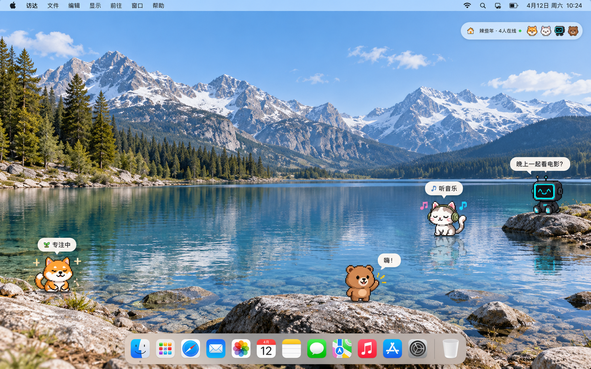

让物理空间上不在一起的情侣，有一种轻轻的「在场感陪伴」。
各做各的，也能感受到你在；想交流时，可以随时发起。

原概念图展示多人房间与活动想象；首次内测先验证情侣场景，画面不代表已确认的版本范围或当前实际界面。
框表示归属，短句表示联系。范围与实现进度分开：文字聊天已实现，其他功能的进度未在此审计。
创建房间 · 邀请式加入 · 加入／退出
在房间中相遇，在桌面上彼此陪伴
主动选择，由桌宠表现原图示例：勿扰、空闲、工作；开心、难过具体枚举后续细化
动作通讯：文字聊天（已实现）
用户（账号）拥有一个桌宠，成员以桌宠化身出现
面向成员；招呼不留下待回应负担
保留原图能力，控制对象与具体规则待细化
身份关系用户 → 房间成员 → 普通成员／管理员；权限属于房间情境。
活动关系房间 → 活动插件 → 活动 → 通知成员；管理员负责安装插件。
拓展关系房间延伸出共同培育；桌宠连接桌宠市场；活动连接插件市场。
外围划分尚未确认；“后续探索”保留方向，不等于已承诺的开发排期。
有多少对情侣真正一起体验？
一起打开是否反复发生？
第一次之后，下周是否还一起用？
统计口径、观察周期与目标数值待内测计划确定；通过简短访谈理解再次打开或离开的原因。
当前草案把活动放在外围，保留原图中完整的活动谱系；尚未获得范围确认。
普通成员／管理员的概念保留；移出成员等基础权限是否纳入内测，需单独确认。
把创建、加入与退出并列放进房间；补充用户与房间成员之间的概念关系；将状态和心情并列保留；静音暂不连到具体对象，以免替未定规则做决定。
产品价值与协作共识保存共同基础；这份全景表达产品形态、关系与范围；当前 Project 承载版本目标、验收与任务。
查看可放进 Linear 的短稿
这份页面是本地讨论稿，尚未发布，也未修改 Linear。协作机制沿用已有想法，待单独讨论后补充。